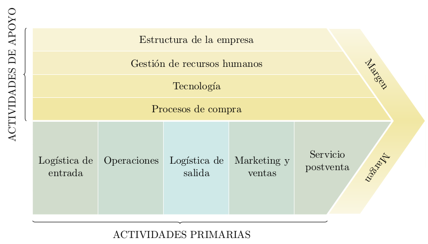

Este artículo es un resumen de [BILBAO-2013] , capítulo 6
Internet incide en los tres terminos de la ecuación:
$$B_{\uparrow}=I_{\uparrow}-C_{\downarrow}$$
- Beneficio: Permite la búsqueda de nuevas formas de beneficio
- Ingresos: Internet como nuevo canal de crecimiento
- Costes: Internet reduce el proceso y abarata los costes
- Los motivos para vender por internet son, entre otros:
- Mantenerse a la altura de la competencia
- Mejora de la imagen
- Aceleración del proceo de negocio
- Captación de nueos clientes
- Mejorar la calidad del servicio
- Expansión geográfica del mercado
Las TIC no implican directamente un rendimiento sobre la actividad, sino que suponen un soporte básico a partir del cual implantar aplicaciones que si tengan efectos.
- Obstáculos percibidos:
- Productos inadecuados
- La empresa no lo necesita
- Clientes no preparados
- Incertidumbre del marco legal
- Seguridad en los pagos
- Problemas logísticos
En España falta mucho por avanzar en el uso de internet, siendo el potencial enorme.
La infraestructura de las TIC en España es similar al europeo, pero el gasto $TIC/PIB$ es de los más bajos de Europa y muy inferior a Japón y EEUU.
Internet y la estructura de la industria
Según Porter, Internet ha creado nuevas industrias, pero su gran impacto ha sido la reconfiguración de las industrias existentes con altos costes de comunicación (enseñanza a distancia, venta por catálogo...)
Observando distintas industrias se observa diversas tendencias; algunas positivas, otras negativas, desde el punto de vista de la empresa.
- Amenaza de la competencia actual
- [-] Diferencia entre competidores
- [-] Tendencia a competir en precios
- [+] Mayor alcance geográfico
- Amenaza de la competencia potencial
- [-] Menores barreras de entrada
- Amenaza de productos sustitutivos
- [+] Aumenta el tamaño del mercado
- [-] Mayor número de productos sustitutivos
- Amenaza del poder de negociación de los proveedores
- [-] El proveedor puede tener acceso al consumidor final
- Amenaza del poder de negociación de los compradores
- [+] Eliminar canales poderosos
- [-] Aumenta el poder de negociación de los compradores
- [-] Disminuyen los costes de cambio
Cada sector evolucionará de forma distinta, si se analiza el impacto en las cinco fuerzas competitivas se verá que internet seguirá presionando muchos sectores.
Internet y la ventaja competitiva
Las ventajas en precios y costes pueden conseguirse, por eficacia operativa o posicionamiento estratégico
Eficacia operativa
Internet es la herramienta más poderosa para aumentar la eficacia operativa. Las empresas conseguirán ventaja competitiva si son capaces de alcanzar mayor eficacia operativa que sus competidores.
El problema, es que la ventaja competitiva es efímera, debido a la convergencia de la competencia. Al ser internet una plataforma abierta, resulta dificil obtener ventajas competitivas sostenibles.
Posicionamiento estrátegico
Por posicionamiento estrátegico se entiende desarrollar actividades diferentes a la competencia o realizar las mismas de una forma distinta.
Debido a las dificultades de la eficacia operativa, el posicionamiento estratégico se convierte en clave.
- Principios para establecer y mantener un posicionamiento estratégico, según Porter:
- Definir el objetivo en términos de ROI
- Definir una propuesta de valor distinta a la competencia
- La estrategia se debe plasmar en una cadena de valor única
- Las estrategias siempre implican decisión
- La estrategia tiene que definir cómo encajan todos los elementos de la empresa.
- La estrategia quiere decir continuidad
Internet como complemento a la estrategia
Para capitalizar el potencial de internet hay que dejar de tenerle miedo, internet está modificando elementos de la cadena de valor perno no la transformará totalmente.
Hay complementariesdad entre actividades online y offline debido a que introducir aplicaciones de internet en una actividad puede aumentar las necesidades de actividades físicas en otros eslabones de la cadena de valor.
Internet y la cadena de valor
La ventaja principal de internet es su capacidad de ligar las distintas actividades y dotarlas de información en tiempo real.
Aunque internet es importante en la cadena de valor, no es el único factor, otros convencionales siguen siendo importantes: personal, productos, activos fijos
Conclusión
- Hay que adoptar internet por las grandes posibilidades que ofrece
- Internet se explica como una etapa más en la trayectoria de las TIC
- Las ventajas competitivas se deben medir con los mismos parámetros que en el resto de industrias
- Los fundamentos de la estrategia permances iguales.
Referencias
| [BILBAO-2013] | Paloma Bilbao, et al (2013), Política de Empresa y Estrategia, 3ªEd., Editorial Universitas |
Comments
comments powered by Disqus